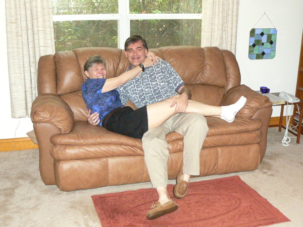

2009 Holiday Web Page

| Erich and Margie's 2009 Holiday Web Page | |
December We went to Margie's college reunion. Since Erich took the pictures, Margie forgot she had taken her camera along... and left it at the hotel. It was three weeks later before she realized it was gone. Several calls to the hotel yielded nothing. For Christmas, Michael and Deborah got us tickets to see Toxic Audio, a humorous and acrobatic a cappella group. We especially enjoyed the part of the program where they improvised songs with given titles and styles, and they chose to do Margie's bluegrass song "Harmony Grits"! We had 13 guests and lots of champagne at our annual New Year's Eve Party.
January After the holidays, Margie finally called the hotel again and got a higher-up, who spent some time figuring out Margie's name was misspelled in the computer. After another couple days, the camera was found and mailed back, restoring Margie's faith in humanity. Erich bought his third watch ever, after the previous one died suddenly. We investigated a strange plant in our yard which turned out to be an air potato vine. One morning, Erich found a live scorpion in his shower. Erich finally finished his collection of state quarters. A few days before spring classes began, we went canoeing.
February We started a new tradition: watching Erich's favorite movie "Groundhog Day" on groundhog day. This year we celebrated Valentine's Week instead of Valentine's Day. Monday we celebrated the full moon. Wednesday we ate dinner on the beach and watched the moon rise over the ocean. Friday the 13th we saw Chris Burns, one of favorite singer/songwriters, and attended an "Unlucky in Love" party. That weekend Stetson baseball started, and we lost our first 5 games. During the first game that we won, the sprinkers on the field came on in the middle of the game! Mensa UK used a few of Erich's puzzles in their February newsletter. We went down to the Disney complex to visit Julie, Erich's friend visiting from Colorado. Julie had sent a picture of the entrance to her hotel so we would be able to tell it from the many others. We showed the picture to the traffic guard, which sent him into hysterics.
March A whippoorwill visited our yard early one morning. Margie won an ice cream pie at a baseball game during a scavenger hunt promotion. She was the first to show up with a seat cushion, beating out a 10 year old girl. We were fascinated by the book "Not Quite What I Was Planning", a book of six-word memoirs. You can read some of them here. We also wrote our own. Erich's: "welfare to academia. not that different." Margie's: "Mainline manners, Tennessee taverns, Florida - finally!" Margie won an award for being the best math professor in Florida. She stored the impressive plaque in a closet. It took 23 days for Erich's pharmacy to fill a prescription. We saw the Capitol Steps perform at Stetson's homecoming. Erich completed a 21-month computer search to find all the 6-digit nice Friedman numbers. Erich got a new license plate and driver's license. Margie looked out the peep hole of our front door looking for packages and found an insect staring back!
April Some of Erich's puzzles were included in a Korean textbook for children. Margie was a group moderator in Stetson's first deliberative opinion poll. The topic was "How to Make a Stetson Education More Affordable" and the students were very thoughtful about their opinions, arguments, and questions. We had two new birds visit our yard: a worm-eating warbler at our water dish, and a chuck-will's-widow waking us up. Some of Erich's puzzles were included in an interactive puzzle collection at the Discovery Science Center in Pullman, Washington. Lynn drove up for the day, and we went canoeing, where we saw rare limpkins and a barred owl.
May Erich contributed a puzzle to a Czechoslovakian video game. At Guen and Michele's second annual Beltane Fire dinner, we watched belly dancers perform, danced around a May pole with ribbons, and acted out love stories for prizes. Margie was Helen of Troy, and got second place. Erich was King Arthur and was lucky not to get last place. Margie set a record by failing 70% of her precalculus class. To celebrate the full moon this month, we attended graduation, went out to eat, watched our baseball team notch up a rare victory by 15 runs, and viewed the International Space Station as it passed directly over central Florida.
June In a restaurant restroom, Erich's leg got peed on by the guy at the next urinal. Margie found out an old and dear friend from Indiana had passed away. Pearl, along with husband Ken, was a frequent birding buddy from 1984 to 1988. Pearl was also a lover and photographer of butterflies, and would have enjoyed the Spicebush Swallowtail that visited our yard the previous week. Erich heard from an old lover that he hadn't heard from in over 20 years. Margie reported for jury duty for the first time ever, and was impaneled right away. She was asked to recite the Pythagorean Theorem but was excused from service, possibly because Stetson IT guy Don was also on the panel. We found a petrified marshmallow in the TV room. (Last year's readers will find this amusing.) Three of Erich's puzzles were used for the U. S. Puzzle Championships. Erich's father Henry and his partner Jerry came to visit. Erich hadn't seen his father in over 15 years. We ate well, walked on the beach where we saw a rocket launch, toured the Cultural Arts Center, bought stuff at the Key Lime Shoppe, showed them campus and our offices, took a St. John's River cruise where we saw a wild turkey, and did a lot of drinking and talking to catch up.
July Margie joined Facebook. Erich sold puzzles to two different magazines. We visited Lynn, where we learned a new card game, swam, ate well, and drank heavily. We celebrated our 22nd anniversary. We heard the worst live music ever. It was Erich's turn to clean the septic tank filter.
August For our full moon ritual, we ate out, went to the book store, bought some birthday gifts for friends, and driving home we passed a pirate ship on the side of the road! Just after classes started, the president of Stetson who had just stepped down a few months before, died unexpectedly. Classes were canceled for part of a day, but we met our classes anyway. We noticed a slug crawling up the bathroom window.
September Erich had the power steering rack repaired on his 15-year-old car. And 4 hours later he collided with someone at a gas station, requiring more repairs. After spending more than the car was worth, he hopes it will last awhile longer. One of Erich's puzzles was included in a submission to the Interactive Fiction Competition. Margie's college roommate Alyn stayed with us for a night, and she spotted the first turtle we have seen in our yard! Erich played in a poker tournament on campus for charity. He left when his pocket aces were beaten on the river. Some circle packings at Erich's Packing Center were turned into a hands-on exhibit in Dresden.
October Erich got his first e-mail from Indonesia. Our waitress at Carrabba's mistakenly greeted us by asking whether we had ever eaten at Olive Garden before. We shopped at the world's largest flea market in Daytona. A bear was spotted on campus. On the first fall weekend, we went canoeing at Blue Spring State Park a few miles from our house. You can see some pics here. A fat raccoon visited our water dish frequently. We attended halloween festivities, at Guen and Michele's (where Margie won most humorous costume), and then on Minnesota Ave. and downtown Deland. You can see the archive of costumes here.
November We got Swine Flu shots. Only one student showed up to one of Erich's classes, which he dutifully taught. We made dessert pizza, inspired by Mike and Regina. We went to the Deland Art Festival, meeting some friends and colleagues, hearing some good music, and buying several small nature photographs. Margie wanted to buy some munchkins at Dunkin' Donuts for one of her classes. She was told they were 20 cents each, or $5.99 for 25.
For Thanksgiving vacation, we stayed for two nights on the beach in St. Augustine. We shopped at the outlet mall and in old town. We walked on the beach, but saw more wildlife (including lots of dolphin frolicking) on a private eco-tour. We played mini-golf and went go-karting. We ate twice at the Columbia restaurant, once for Spanish food and once for traditional turkey. We enjoyed the carnival atmosphere of downtown, which was decorated with Christmas lights. On the way home we stopped at Mantanzas National Monument, and got lost looking for a place to eat lunch.
December We finished the year by finishing watching 160 episodes of "Without a Trace". Erich got word that his six-word memoir will be published in the new book More Six-Word Memoirs being published next month. We went to see Chris Burns again. We played games by candlelight when the electricity went out, and Margie got quite inebriated! Erich's puzzle page was mentioned by the "Surfing the Net with Kids" syndicated newspaper column. We look forward to our usual holiday celebrations: Michele and Guen's solstice party, our walking on the beach on Christmas Day, and our New Year's Eve Party. Erich and Margie would love to hear from you. You can try Erich's holiday puzzles here. And you can see our archive of previous holiday web pages here.
